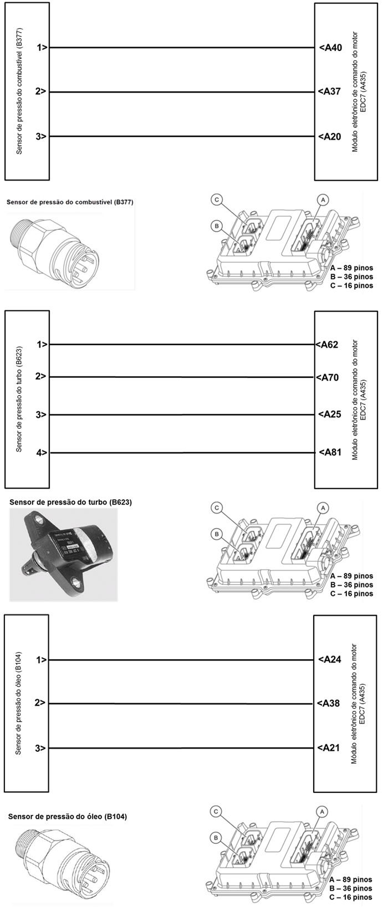

|

Descrição da Falha
Circuito da
alimentação dos sensores: de baixa pressão do combustível, da pressão
de carga do turbo e da pressão do óleo, curto ao positivo.
Indicação de Falha
Luz de alerta acende constantemente
com os símbolos  e e  e ativa o alarme sonoro longo, com o veículo andando ou parado. e ativa o alarme sonoro longo, com o veículo andando ou parado.
A LIM permanece desligada.
Estratégia de Monitoramento
O módulo EDC7 monitora o circuíto
quanto a curto para o massa, para o positivo e interrupção do
circuíto.
Efeito da Falha
Sensores fornecem valores
incorretos ou nenhum. O módulo adota valores de emergência para que o
motor continue funcionando.
Possíveis Falhas
FMI 4: Interrupção da linha de
alimentação.
FMI 5: Curto para o massa.
FMI 6: Curto para o positivo.
Sensor com defeito.
Aviso
  Se a tensão
de alimentação estiver muito baixa (por volta de 2,6V) também pode
ser um curto no sensor lambda a causa da falha. Se a tensão
de alimentação estiver muito baixa (por volta de 2,6V) também pode
ser um curto no sensor lambda a causa da falha.
Registros de Falhas em Outros
Módulos de Comando
Sim, PTM (Power Train Management)
que também monitora o sensor de pressão do turbo e a LU (Unidade
Lógica) que também monitora o sensor de pressão do óleo.
Considerar os esquemas
elétricos do veículo
| Verificação
|
Medição |
Eliminação da
Falha |
|
Tensão de alimentação do sensor de pressão
do combustível
|
Utilize o Tester Box e consulte o manual Verificação EDC7 C32:
- Medir a tensão entre o pino A40 e o pino
A37
Valor nominal:
4, 75 - 5,25 V
|
– Verificar os cabos
quanto a oxidação ou cabo interrompido
– Verificar as
conexões quanto a mau contato ou pino torto
– Substituir o sensor
– Caso nenhuma falha
seja verificada, substituir o módulo EDC7.
|
|
Tensão de alimentação do sensor de pressão
do turbo
|
Utilize o Tester Box e consulte o manual Verificação EDC7 C32:
- Medir a tensão entre o pino A25 e o pino
A62
Valor nominal:
4, 75 - 5,25 V
|
|
Tensão de alimentação do sensor de pressão
do óleo
|
Utilize o Tester Box e consulte o manual Verificação EDC7 C32:
- Medir a tensão entre o pino A24 e o pino
A38
Valor nominal:
4, 75 - 5,25 V
|
Tester Box

|